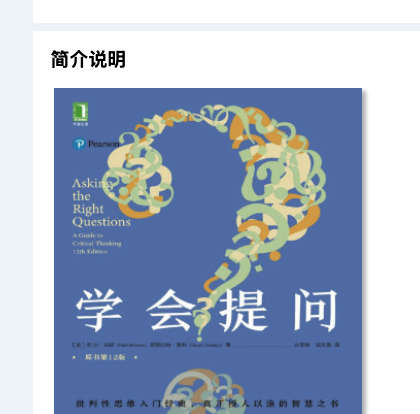

小朋友版批判性思维第12版
不要急着相信，
不要急着相信，
先问几个好问题
这本书不是教你“问得很多”，而是教你检查别人和自己的理由，值不值得相信。
M. Neil Browne、Stuart M. Keeley｜Asking the Right Questions
别人递给你一个答案时，先别吞下去；把它拆开看看。
1. 两种学习方式
海绵式 🧽
“老师说了，我就吸进去。”
优点：学得快。
危险：错误也一起吸进去。
VS
淘金式 🥣
“我先筛一筛，哪些是真金？”
动作：提问、比较、查证、形成自己的结论。
2. 全书其实是四道检查门
1
他在说什么？
- 论题是什么？
- 结论是什么？
- 给了哪些理由？
2
话里藏了什么？
- 关键词是否含糊？
- 背后有什么价值取舍？
- 默认了什么事实假设？
3
靠谱吗？
- 有没有谬误？
- 证据可靠吗？
- 还有别的原因吗？
- 数字会骗人吗？
4
还缺什么？
- 省略了什么成本、风险、反例？
- 除了“是/不是”，还有哪些合理结论？
3. 随身携带的 11 个问题
1
论题与结论？到底在争什么？他要我相信什么？
2
理由是什么？因为后面跟的，真能托住结论吗？
3
词语含糊吗？“成功、有效、严重”具体指什么？
4
价值假设？更看重自由、公平、效率，还是安全？
5
描述性假设？理由到结论之间，默认什么是真的？
6
有谬误吗？人身攻击、稻草人、二选一、诉诸情绪？
7
证据好吗？个案、专家、调查、研究，各有多可靠？
8
还有别的原因？相关不等于因果，可能有第三个因素。
9
数字骗人吗？样本、平均数、基准、测量方法是什么？
10
省略了什么？代价、失败者、反例、替代方案在哪里？
11
还有什么结论？答案也许取决于条件，而不是非黑即白。
4. 论证像一座小桥
理由因为……
＋
隐藏假设默认……
→
结论所以……
桥板是理由，桥墩是隐藏假设。任何一块断了，结论都可能掉下去。
5. 最有益的六个思考
先检查自己
弱势批判只挑别人毛病；强势批判也会挑战自己的信念。
先定义词语
很多争论不是观点不同，而是双方说的“好、快、公平”根本不是一回事。
证据分等级
“我朋友遇到过”不能自动代表所有人；样本、测量和来源决定可信度。
相关不等于因果
A和B一起出现，不代表A造成B；先找第三个因素和反方向解释。
看见缺席的信息
真正影响判断的，常是没说出来的成本、风险、反例和失败者。
接受灰度答案
好答案常是“如果A成立，就选B”；不是永远只有赞成和反对。
6. 大脑会偷偷绊你一跤
第13章提醒：最大的敌人不一定是坏人，而是自己的快捷键。
我们会为了舒服、省力和维护面子，过早停止思考。
⚡想得太快
😇晕轮效应
🔒信念固着
🎈一厢情愿
🏷️刻板印象
📺可得性偏差
🎯答非所问
👑自我中心
7. 举个例子：“AI能让团队效率翻倍”
“用了AI，团队效率可以翻倍！”
这句话听起来很棒，但先不要马上点头或摇头。
🤖❓
用书中的问题扫一扫
- “效率”是速度、质量，还是成本？
- “翻倍”的数据从哪里来？样本多大？
- 有没有只公布成功团队？
- 培训、审校和数据安全成本呢？
- 结果可能来自流程优化，而不只是AI吗？
- 更合理的结论会不会是：“某些标准化任务，在有人复核时更快”？
8. 真正值得留下，以及要小心的地方
值得留下 ✅
- 把“我感觉”升级为“我的理由和证据”。
- 把一句结论拆成可检查的零件。
- 主动找反例、替代原因和遗漏信息。
- 允许多个结论，并写清适用条件。
- 把同样严格的问题用在自己身上。
不要用错 ⚠️
- 它是检查清单，不是自动产出真相的机器。
- 没有领域知识，可能问得对却判断错证据。
- 别把对话变成审讯；提问要说明善意。
- 低风险小事不必每次完成11项全检。
- 高风险判断仍需查看原始数据和专业来源。
9. 今天就能练的 5 分钟动作
选一条你刚看到的新闻、汇报或群聊观点
- 用一句话写出对方的结论。
- 列出对方给的2—3条理由。
- 圈出一个含糊词和一个隐藏假设。
- 问：“什么证据会让我改变判断？”
- 补一个替代原因、一个被省略的信息。
- 写一个带条件的新结论。
他要我相信：______
主要理由：______
含糊词：______
隐藏假设：______
缺的证据：______
更合理结论：如果___，那么___